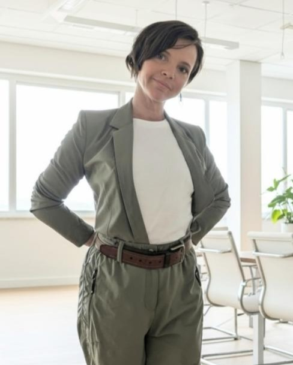

I am a professional deeply rooted in the parallel worlds of technology and nature. My journey moves between the structured logic of computer terminals and the wild freedom of ocean tidepools. This dual identity informs my vision: to build a career in ethical tech and Digital Trust & Safety, grounded in integrity, continuous learning, and deliberate balance.
A vision is meaningless without a reliable compass. I operate on non-negotiable principles that guide my work and life:
I operate from a place of authenticity and ethical clarity. I do not trade ethics, health, or long-term trajectory for short-term gain.
I prioritize deliberate decision-making. My decisions become simpler as my direction becomes clearer. Relationships and work must increase clarity, not confusion.
I pursue a life and career that avoids burnout by integrating productivity with humanity. My physical and mental health are foundational assets.
I seek connections rooted in mutual respect and honesty. Whether through professional networking, creative expression, or shared values, I am building a trusted circle focused on growth.
Adventures from my Chevy Express campervan: a mobile office for me and a glorified dog kennel for Tada.
Practical, human-centered guidance for staying safe online — based on years of real work in abuse mitigation, fraud review, and account security.
My journey through building a life grounded in gratitude, nature, and care.
Music, guitar, lap harp, lyrics, and creative expression — tools that help me process, re-center, and grow.
My studies in Data Science and the pursuit of deeper analytical skills that enhance my work in Trust & Safety.
My story traces the path from early caretaking to building complex digital safety systems. It is a cumulative narrative of stewardship, dual fluency in nature and tech, and a progression toward systemic problem-solving.
My earliest sense of self was defined by responsibility. Growing up as a caretaker for younger siblings, animals, and gardens, I learned instinctively about the needs of living systems. This ethic evolved into a deep reverence for nature, from the San Diego coast to the forests of Oregon.
I forged a unique identity between two worlds. While I trained as a Junior Lifeguard to read currents and swells, I was simultaneously teaching myself HTML to build websites for my art. This parallel development created the lens through which I see the world: valuing both organic wildness and structured logic.
My career reflects a consistent evolution from direct service to systemic solutions. From organizing game sections at toy stores to building the entire Trust & Safety function at a global registrar, I am driven to create order, protect others, and bridge human needs with technical systems.
Strategic Trust & Safety professional dedicated to building healthier digital ecosystems. My work aligns ethics, intellect, and impact to protect users from harm. With over 6 years of experience building departments from the ground up, I blend quantitative data with qualitative insights to safeguard digital communities.

2018–2025
Built the entire Trust & Safety function for a global registrar, deploying fraud-detection systems, operational workflows, and abuse-response processes that cut financial losses by 60% and dramatically improved platform integrity.
Investigative problem-solver who connects signals across DNS, OSINT, payments, and user behavior to identify bad actors early, intervene decisively, and prevent multi-layered fraud at scale.
Systems thinker who translates risk patterns into repeatable workflows, clear documentation, automation opportunities, and requirements Engineering teams can build.
2014–2018